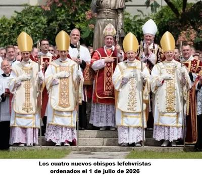

El papa León XIV se enfrentó recientemente a uno de los primeros conflictos importantes de su pontificado. La Fraternidad Sacerdotal San Pío X (FSSPX), movimiento tradicionalista católico enfrentado desde hace décadas con Roma, volvió a desafiar la autoridad del Vaticano, al ordenar el 1 de julio de 2026, cuatro nuevos obispos sin autorización pontificia. En respuesta, el 2 de julio el Vaticano declaró que los participantes habían incurrido en excomunión automática (nuevamente, porque ya antes lo habían hecho y se les había perdonado).


La FSSPX fue fundada en 1970 por el arzobispo francés Marcel-François Marie Lefebvre (1905-1991), conocido como Marcel Lefebvre, y al poco tiempo comenzó su enfrentamiento con Roma por las reformas introducidas por el Concilio Vaticano II (1962-1965), al considerar que la Iglesia estaba abandonando la Tradición para adaptarse al mundo moderno. Lefebvre rechazaba, entre otras cosas, la celebración de la misa en la lengua vernácula de cada país, de cara a los fieles, la comunión en la mano, el uso de instrumentos musicales modernos en las misas, el ecumenismo, y la defensa de la libertad religiosa. Y debido a su oposición, fue suspendido por el papa Pablo VI.
Pero el conflicto alcanzó su punto crítico en 1988, cuando desobedeciendo expresamente a Juan Pablo II, Lefebvre consagró cuatro obispos sin autorización papal. La Santa Sede calificó el acto como cismático, y declaró excomulgados tanto a Lefebvre como a los obispos participantes. Más adelante, sin embargo, en 2009, Benedicto XVI levantó las excomuniones como gesto de reconciliación, aunque la Fraternidad nunca recuperó un estatus canónico regular dentro de la Iglesia Católica. Y diecisiete años después, la historia volvió a repetirse, con la ordenación de otros cuatro obispos en Écône, Suiza, provocando una nueva excomunión, esta vez más extensa que la de 1988, porque además de los 4 obispos ordenados y los 2 obispos consagrantes, ahora abarca también a unos 750 sacerdotes de la FSSPX, y a quienes se adhieran formalmente al grupo.
Pero lo que resulta llamativo es que a pesar de todo, los lefebvristas no rechazan al Papa: reconocen como legítimos a todos los pontífices elegidos en Roma, rezan por ellos durante la misa, e incluso exhiben sus retratos en sus capillas. Sin embargo, se definen como «reconocientes pero no obedientes», es decir, aceptan la autoridad papal únicamente cuando consideran que ésta permanece fiel a la Tradición.
Ahora bien, visto desde una perspectiva crítica y secular, este conflicto va mucho más allá de una discusión sobre el uso del latín en la misa, el canto gregoriano, o la posición del sacerdote frente al altar. Como tampoco puede reducirse únicamente a una lucha de poder, aunque el poder desempeña un papel importante. Se trata más bien de una combinación de factores doctrinales, institucionales, psicológicos, económicos e históricos, que suelen aparecer en organizaciones que afirman poseer una verdad absoluta.
El aspecto más interesante es que ambos bandos aseguran obedecer exactamente a la misma autoridad suprema: «Dios», y sin embargo, llegan a conclusiones opuestas acerca de lo que ese supuesto «Dios» quiere para su Iglesia. Visto con un enfoque secular, esto pone de manifiesto uno de los principales problemas de las religiones basadas en revelaciones: al no existir un método objetivo para verificar cuál interpretación representa realmente la voluntad divina, los desacuerdos terminan resolviéndose mediante estructuras de autoridad y decisiones totalmente humanas.
Pero la verdad es que, en el fondo, la disputa consiste en determinar quién tiene la autoridad para definir qué es el auténtico catolicismo. El Vaticano sostiene que esa autoridad reside en el Magisterio encabezado por el Papa y los obispos en comunión con él, permitiendo que la Iglesia desarrolle su tradición a lo largo de la historia. La Fraternidad en cambio, sostiene que el Papa sólo debe ser obedecido cuando sus decisiones coinciden con lo que ellos consideran la Tradición auténtica.
Y por supuesto, desde un punto de vista lógico, esto plantea una contradicción difícil de resolver, porque si cada grupo decide cuándo obedecer al Papa y cuándo no, entonces la autoridad papal deja de ser realmente suprema. Es por esa razón que Roma considera que el problema no es simplemente disciplinario, sino estructural, porque permitir que un grupo ordene obispos, forme sacerdotes y administre iglesias sin autorización, significa aceptar, en la práctica, la existencia de una Iglesia paralela.
Naturalmente, existe un componente de poder. Toda organización necesita establecer quién toma las decisiones finales. Pero reducir el conflicto únicamente a esa dimensión, sería simplificar demasiado la situación. Ya que también existe un choque entre dos concepciones opuestas de la autoridad religiosa: una considera que la tradición puede desarrollarse históricamente, mientras que la otra sostiene que determinados elementos nunca pueden modificarse.
Por otra parte, el aspecto económico tampoco puede ignorarse. La Fraternidad administra una extensa red internacional de seminarios, colegios, iglesias, editoriales y propiedades financiadas mediante donaciones privadas, y esa estructura funciona con independencia económica del Vaticano. Una plena reconciliación probablemente implicaría aceptar mecanismos de supervisión canónica y administrativa que reducirían considerablemente su autonomía.
Y a esto agreguemos que el Vaticano tampoco tiene interés en permitir que exista una organización internacional capaz de atraer fieles, vocaciones sacerdotales y recursos económicos sin responder a la autoridad central. El dinero, por tanto, parece ser una consecuencia del conflicto institucional más que su causa principal.
Por supuesto, también intervienen importantes factores psicológicos. Después de más de cincuenta años de enfrentamiento, la identidad de miles de sacerdotes y fieles se encuentra profundamente ligada a la Fraternidad. Muchos nacieron y crecieron dentro del movimiento, y nunca conocieron otra forma de vivir el catolicismo. Para ellos, pertenecer a la FSSPX constituye parte esencial de su identidad religiosa. Y algo semejante ocurre en el Vaticano. Admitir que la Fraternidad tenía razón en sus críticas al Concilio Vaticano II, implicaría cuestionar medio siglo de decisiones papales, algo extremadamente difícil para cualquier institución de gran tamaño.
Y como sucede en toda organización humana, tampoco desaparecen factores como el prestigio, el liderazgo, la influencia o las carreras personales. Los obispos lefebvristas ejercen autoridad sobre miles de fieles, dirigen seminarios y ordenan sacerdotes. Someterse plenamente a Roma, implicaría renunciar a una parte importante de esa autonomía. Del mismo modo, para el Vaticano sería difícil aceptar que un grupo que ha desafiado reiteradamente al Papa conserve toda su independencia.
Sin embargo, la paradoja más significativa permanece: ambos grupos afirman defender exactamente la misma Iglesia Católica y estar actuando conforme a la voluntad del mismo «Dios». Comparten la misma sucesión apostólica, los sacramentos, la mayor parte del catecismo, y prácticamente toda la doctrina tradicional anterior al Concilio Vaticano II. Pero aun así, terminan excomulgándose mutuamente, lo que desde una perspectiva crítica, evidencia que incluso una religión altamente centralizada continúa dependiendo de interpretaciones humanas sobre la autoridad.
Pero surge además un problema epistemológico: si realmente existiera un «Dios» guiando sobrenaturalmente a su Iglesia, cabría esperar un criterio claro, objetivo e inequívoco para resolver conflictos de esta magnitud. Lo que se observa, en cambio, es un fenómeno muy similar al de cualquier organización política, ideológica o empresarial: disputas por la legitimidad, interpretaciones contrapuestas, apelaciones a textos antiguos, conflictos jurídicos, luchas por el liderazgo y escisiones.
Cada bando asegura contar con el respaldo divino, pero ninguno puede demostrar objetivamente que su interpretación sea la correcta. Y en ausencia de un mecanismo verificable, la decisión termina dependiendo de quién posee la autoridad institucional reconocida, o de quién logra conservar la fidelidad de sus seguidores.
Así que, en definitiva, el conflicto entre el Vaticano y la Fraternidad Sacerdotal San Pío X no puede explicarse por una sola causa. En él convergen diferencias doctrinales, disputas sobre la autoridad, intereses institucionales, factores económicos, identidades colectivas, y dinámicas de poder propias de cualquier organización compleja.
Desde una perspectiva crítica, este caso ilustra cómo las religiones, pese a fundamentar su legitimidad en supuestas revelaciones sobrenaturales, terminan enfrentando sus mayores crisis mediante mecanismos completamente humanos: competencia por la autoridad, resistencia al cambio, conservación de estructuras de influencia e interpretaciones contrapuestas de unos mismos textos. Y la constante apelación a la voluntad de «Dios», no elimina esas dinámicas; simplemente proporciona a cada bando un lenguaje con el que intenta justificar posiciones que, en última instancia, siguen dependiendo de decisiones humanas.
[Godless Freeman]
[Crédito de imagen: Infobae]
Comentarios
Comments powered by Disqus